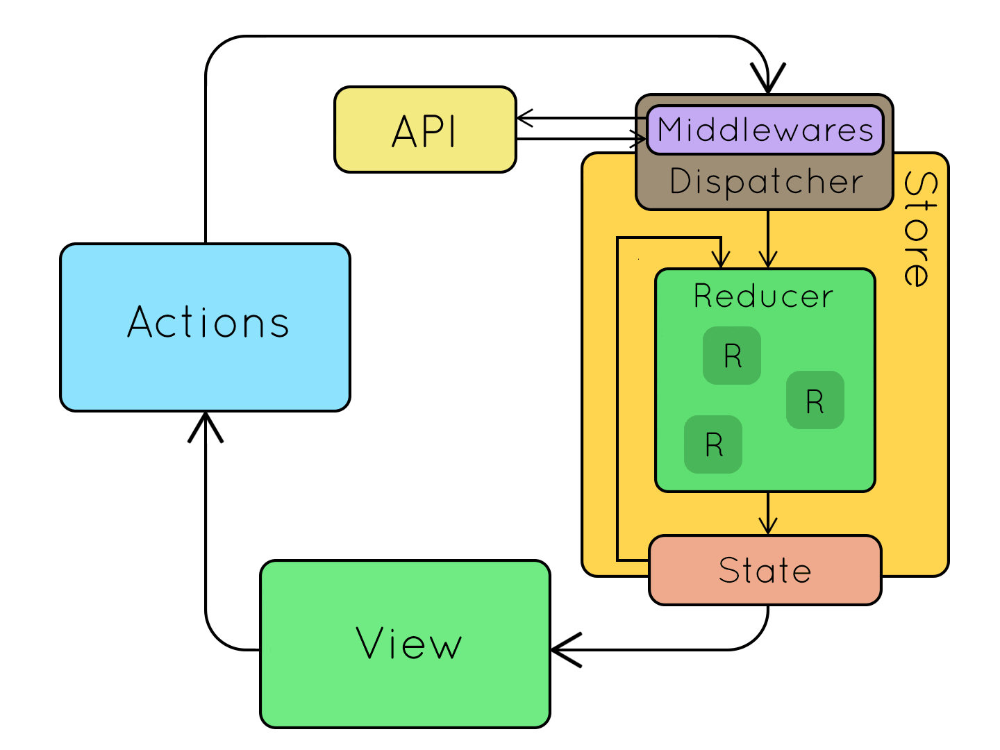

从上周开始一直在看 Redux 相关的文档和资料，一开始一连几天都没有进展，只能一边看文档一边默默 debug，到今天总算稍微理解了一点儿，于是赶紧开始写这篇博客，目的是一点点记录下自己入门 Redux 的过程以及作为一个 React Native 菜鸟对使用 Redux 的心得体会。
（长文预警：本文最佳阅读方式是先把 Redux 文档 以及 React Redux API 文档 在另一个浏览器中打开，随时对比参考，然后把 Demo 项目打开，看到有疑惑的地方，随时停下来动手写一写、改一改代码，debug 下，然后再接着看）
00 What’s Redux?
首先看下官方文档的解释『Redux is a predictable state container for JavaScript apps』，大致可以翻译为 Redux 是一个专为 JavaScript 应用设计的可预测的状态容器。
我的理解：如果把我们的 app 比做销售柜台的话，Redux 其实就像一个自动售货机，它可以帮助我们管理商品（组件）的各种状态。
我们知道在一个 RN 项目中，一般会定义许许多多的组件，每个组件都有自己的 State，通常情况下会通过 setState 去更改组件状态或者响应用户的在 UI 上的输入，但是随着一个 App 的内容的增加以及逻辑复杂度的上升，组件的的状态会变得越来越臃肿，继而变得难以维护（维护困难也是 RN 最大的痛点）。所以，这个时候就该 Redux 出场了，我们通过引入它来帮助我们管理组件的状态。
简单来说，有了 Redux 之后，我们基本上就不需要自己去 setState 了，因为几乎所有的 State 的变化都可以交给 Redux 来管理。
01 Core Concept
Redux 中有四个核心的概念是需要我们掌握的，分别是 Actions, Reducers, Store 以及 Data Flow（强烈推荐看一遍 Redux 文档 里对这几个概念的介绍）。
看过文档后差不多就可以知道，我们通过在需要改变 state 的地方发送(dispatch) action，然后在 reducer 中根据 action 的 type 进行处理（返回增删改后的 state），而 state 则是根据 reducer 的组合结构保存在 store 的 state 树中的。
文字太枯燥，来看下面这张图辅助理解：

我简单分析下这张图吧：
- 首先 React 组件绑定了 Redux 之后（主要借助 React-Redux，下面会说到），就可以使用
store.dispatch()去发送事件了，比如在按钮的点击事件中发送 action； - store 接收到 action 之后，会把之前的 state 连同发送的 action 一起传递给 reducer，然后 reducer 会根据我们定义好的处理方式去处理 action （增删改 state），然后返回新的 state 让 store 去更新全局 state 树；
- 最终 store 会把新的 state 返回给发送 action 的地方好让 React 组件更新 UI。
Q & A
这里再总结一些 Redux 新手会比较疑惑的点：
问：什么是 Action Creator ?
答：顾名思义，Action Creator 就是生成 action 的函数，我们知道 action 是一个对象，其中携带了一些用于更新 state 的数据。想象一下，如果我们每次发送事件的时候都自己定义一个 action 对象，那么无疑是非常容易出错的。而使用 Action Creator 后，管理 action 就容易多了，而且也不用担心在 action 中用错属性了，因为只要在 Action Creator 中定义好参数后，我们就可以在发送该 action 的地方确定需要携带哪些数据了。比如：
1 | export function changeText(text, color) { |
问：reducer 当中是如何更改 state 的？可以在 reducer 中发请求吗？
答：不可以！注意，reducer 只是通过接收 action 去处理 state 的变化，我们不可以在 reducer 中引入变化。引用文档上的话：
Remember that the reducer must be pure. Given the same arguments, it should calculate the next state and return it. No surprises. No side effects. No API calls. No mutations. Just a calculation.
也就是说 reducer 必须是纯函数，接收输入，返回输出，只是纯粹的计算。举个例子：
1 | function textReducer(state = {}, action) { |
需要注意的是，我们不可以改变原来的 state，也就是要保持 Object.assign() 中的第一个参数为空，当然也可以使用扩展运算符 {...state, {newState}} 来达到同样的目的。
问：React 组件是如何更新的？
答：哈哈，这个其实就是真正体现出 Redux 优势的地方。之前说过有了 Redux 之后我们就不需要自己去管理 state，这是怎么做到的呢？其实当我们把所有的 state 都交给 Redux 之后，Redux 在 store 中就保存了我们应用所有的 state (state tree)，这意味着我们可以在任意位置获取到这些 state。而在 RN 中，我们通过 React-Redux 来连接 Redux 和 RN 组件，然后在组件中通过将 state 映射成 props 来使用，而且我们还可以将 dispatch 也映射成 props 来使用。也就是说，我们只需要使用 this.props.xxx 就可以完成数据的展示、响应用户输入以及 UI 变化了，是不是非常神奇？后面 03 段会详细说我们是怎么通过 React-Redux 来做到这一点的。
02 Basic Usage
了解了 Redux 基本概念之后就可以来学习一下如何使用了。这一节主要介绍 API 的使用。
Store
之前举了个 Action Creator 和 reducer 的例子，也知道了我们需要通过 store 来将这两者绑定在一起，但是 store 究竟还有哪些作用呢？store 主要有以下职责：
- 保存应用状态（state）
- 提供对 state 的访问：getState()
- 提供对状态进行更新的方法： dispatch(action)
- 注册监听器： subscribe(listener)
- 通过 subscribe(listener) 返回的方法处理解注册监听器
可以看出 store 就像母体一样，即保存了状态又连接了 Action Creator 和 reducer。但是究竟是怎么连接的呢？
首先，之前说过我们的 reducer 可以定义 store 保存的 state 树结构，为什么呢？因为 reducer 是可以层层组合的。通常一个组件会有很多层级以及类型（比如 UI 和数据）的 state，我们不可能全都把他们定义在一个 reducer 里，这样代码会变得又长又难以维护。正确的做法是我们应该把一个 reducer 拆分成多个 reducer 后再通过某种方式将它们组合起来。
combineReducers(reducers)
最常见的就是使用 combineReducers() 方法来组合 reducer，它可以把多个 reducer 合并成一个 reducer 对象，而合并后的 reducer 的层级结构就是我们访问 state 时的层级结构。接收的参数是一个 reducer 对象，我们可以自己指定 key，也可以直接组合，比如：
1 | const allReducers = combineReducers({textReducer, imageReducer, videoRed: videoReducer}); |
createStore(reducer, [preloadedState], [enhancer])
当把多个 reducer 合并成一个之后，我们就可以通过 createStore 来创建 store 了，它唯一必须的参数是 reducer，也就是我们 combineReducer(reducers) 返回的 reducer。
第二个参数是可选的初始状态 preloadedState。我们可以从服务器读取初始状态，或者在 app 启动时从本地数据读取初始状态。如果使用了 combineReducer() 后的 reducer 作为第一个参数，那么 preloadedState 就必须是结构和 reducer 中的结构保持一致。
第三个参数也是可选的 enhancer，接收的是一个函数，可以是你想要提供的第三方的功能，比如 Redux 自带的 applyMiddleware()，这个属于高阶的内容，以后有时间会写写。举个例子：
1 | const allReducers = combineReducers({textReducer}); |
createStore() 返回的 store 就是保存了应用全局 state 的对象了，这个时候我们就可以使用 getState() 并且根据 reducer 的层级来访问保存在其中的 state 了！
Others…
其实核心的 API 就是以上这些，但是下面这些也是比较常见的，这里贴个链接自己看吧(๑^ں^๑)
03 Combine with React-Redux
理解了 Redux 的核心概念以及基本 API 之后，我们就可以开始尝试学习如何在 RN 中使用 Redux 了。在 RN 中，我们一般会结合 React-Redux 来使用 Redux，通过它我们可以很方便地把 Redux 和 RN 组件绑定在一起。React-Redux 也是 Redux 官方推荐的用来和 React 绑定 的框架，其实我也有点奇怪为什么不直接把 React-Redux 加入到 Redux 中去？(・_・ヾ
同样的，在介绍 React-Redux 具体用法之前，建议先把 API 文档 打开放边上供随时参考。
<Provider>
从文档上可以发现，React-Redux 的 API 分为两部分，分别是 <Provider store> 以及connect() 方法。connect() 方法用于连接单个的 RN 组件和 Redux Store，而 Provider 则作为根布局用于包装所有的 RN 组件，使得其中使用了 connect() 后的组件可以自由访问 Redux Store。
比如假设你的根部组件是 <Main/> （如果你使用 react-native-router-flux 作为 navigation 的话，那么根布局就是 <Router>），用 <Provider> 包装后就是这样的：
1 | <Provider store={store}> |
而在你的容器（Container，下面会说到）中，需要使用 connect() 方法来连接 RN 组件和 store，像这样：
1 | export default connect(mapStateToProps, {changeText, changeBack})(Main); |
connect()
React-Redux 的核心就是 connect() 方法了，所以下面详细介绍下 connect() 方法的各个参数。
调用 connect() 方法不会修改组件，但是会返回一个已经和 store 建立连接后的新组件，它使用了装饰器模式，装饰的是 connectAdcanced()，这个方法返回一个接收需要连接的组件的方法（比如上面的 Main）。
它的参数如下（建议参照文档看，我的翻译也许有误）：
mapStateToProps(state, [ownProps])
这是一个 function 类型的参数。
如果指定了这个参数，那么返回的新组件就会接收到 store 的更新。也就是说每次 store 发生更新时这个方法都会被调用。使用方式如下：
参数：
state: 即 state 发生更新后接收到的新 stateownProps: 可选，新组件接收到的 props，如果指定了该值，那么这个方法也会被调用
返回值：
- 必须是对象
object，并且该对象会被合并到组件的 props 中去。我们一般将接收到的 state 里面关于该组件有用到的部分取出，映射成对应的 props 就可以了，其实这个方法就是一个选择器（selector）
Tips: 如果不想接收到 state 的更新，可以传 null 或 undifined
mapDispatchToProps(dispatch, [ownProps]) or Action Creators
这是一个 function 或 object 类型的参数。
如果指定的是 object，那么其中的每个属性必须是都是 Action Creator，每个 Action Creator 都会被包装到 dispatch() 中，并且合并到组件的 props 中去。
如果指定的是 function，使用如下：
参数：
dispatch: store 的dispatch()方法，你可以自己决定如何使用dispatch去发送事件（当然也是通过 Action Creator），比如使用 bindActionCreators()ownProps: 可选，和mapStateToProps一样也是新组件接收到的 props
返回值：
- 同样是一个对象
object，会被合并到 props 中作为发送事件的方法来使用
Tips: 如果不指定该参数（mapDispatchToProps or Action Creator）那么 React- Redux 默认会把 dispatch 方法注入到组件中，方便你自己手动去调用 Action Creator。
mergeProps(stateProps, dispatchProps, ownProps)
这是一个 function 类型的参数。
该方法用于将前面两个参数返回的对象以及组件自己的 props 进行重新组合或者过滤，一般如果 props 较多的话，我们可以指定这个方法来对 props 进行筛选，然后再合并到组件中。使用方法如下：
参数：
stateProps: 表示mapStateToProps()返回的对象dispatchProps: 表示mapDispatchToProps()返回的对象ownProps: 组件自己的 props
返回值：
- 筛选后的对象，将会被合并到组件的 props 中去
Tips: 如果不指定该方法，默认将调用 Object.assign({}, ownProps, stateProps, dispatchProps) 来合并所有的 props。
options
这是一个 object 类型的参数。
该方法用于定制连接器的行为，具体可使用的参数有：
[
pure] (Boolean): 如果为 true 则当 state/props 值没有发生变化的时候则不重新渲染（rerender）或者调用mapStateToProps()ormapDispatchToProps()orownProps，前提是组件必须是*”纯”*的（PureComponent？），不依赖组件内部的 state 而只依赖 props 和 Redux store。[
areStatesEqual] (Function): 当是纯组件时，比较接收到的新 state 和之前的值，默认值strictEqual (===)[
areOwnPropsEqual] (Function): 当是纯组件时，比较接收到的新 props 和之前的值，默认值 shallowEqual[
areStatePropsEqual] (Function): 当是纯组件时，比较mapStateToProps()接收到的新 state 和之前的值，默认值 shallowEqual[
areMergedPropsEqual] (Function): 当是纯组件时，比较mergeProps()接收到的新 props 和之前的值，默认值 shallowEqual[
storeKey] (String): 从当前上下文中读取 store 的 key，当你有多个 store 的时候才会使用这个参数，不推荐使用多个 store，默认值store
Others
当然，以上是核心 API，下面两个方法不是很常用，所以不多介绍了，自己看去吧~´･ᴗ･`
04 Show Me The Code
能看到这里说明你真的很好学啊，既然这样那就一起来撸一下代码吧(๑•͈ᴗ•͈)。Demo 地址：aJIEw/Redux
首先说明下，以下的项目分包是推荐的做法，你不一定需要完全遵守：
- components [folder]
- containers [folder]
- redux [folder]
- actions [folder]
- reducers [folder]
- store.js [file]
Components & Containers
Components 和 Containers 下面放的是两种不同的组件。这里的 Component 和 React 中的 Component 是有区别的，专指那些只是用来展示数据的、无状态的纯组件。Components 的特点是：1）通过 props 来接收数据；2）可在多处复用。由于是单纯用于展示的组件，我们一般不会在 Components 中发起网络请求、进行本地存储等操作。
而 Containers 指的是一个小的模块，用来连接数据并且可以修改数据的组件。Containers 一般会通过组合 Components 来使用，我们会在其中处理用户输入、状态变化，也可以发起网络请求等操作。Components 和 Containers 的最简单的区分方法是：有没有使用 React-Redux 的 connect() 连接组件。
而 redux 包下存放的当然就是和 Redux 相关的内容啦，actions 下存放 Action Creator，reducers 下存放 reducer，最外面的 store.js 则是创建 store 的地方了。
Demo
看代码之前先看下我们的 demo 实现的效果吧：

根据最近学到的 SSCCE 原则，我尽可能把这个 demo 写的足够简单，目的是帮助理解 React Redux 的使用。
ChangeableText
这个 Component 的作用很简单——显示文字，不过文字和颜色是可以改变的。
1 | export default class ChangeableText extends Component { |
Main
而作为 Container 的 Main 则组合了 ChangeableText 组件并且有两个可点击的按钮用于改变文字。
1 | class Main extends Component { |
最重要的部分就是 connect() 方法啦，这里我使用了 bindActionCreators() 来创建 dispacher：
1 | // 将 state 映射成 props，这里我们可以自由组合需要使用到的 state，只要是 store 树中存在的 state 都可以直接拿来使用 |
Action Creators
没啥好说的，注意 type 是必须要有的。
1 | export const CHANGE_TEXT = 'CHANGE_TEXT'; |
reducers
如何组织 reducer 是门艺术，尤其是当 app 变得复杂之后，不过我们现在不用考虑这个问题…
1 | function textReducer(state = {text: 'Hi', color: 'black'}, action) { |
store.js
最后就是创建 store 了：
1 | const allReducers = combineReducers({textReducer}); |
Root
最最后，记得要把根组件用 <Provider> 包装起来：
1 | export default class Root extends Component { |
OK，大致就这么简单，接下来就是运行，debug，看看 state 是怎么在组件中被传递的。
05 Sum Up
通过上面的介绍，配合官方文档和 Demo，如果你有完整看完的话，相信对于如何使用 Redux 应该基本没问题了，所以这个时候就可以祭出这张图了：

这张图可以说非常完美地展现了 Redux 的工作原理，值得细看。其中 middleware 属于高级内容没有仔细讲，下次有时间的话会再续更。
Redux 可以说是管理 state 的神器，能把我们从混乱和无序中解救出来。希望这篇文章可以帮助想要学习 Redux 的同学尽早入门~(◍•ᴗ•◍)❤~~
祝大家中秋快乐！